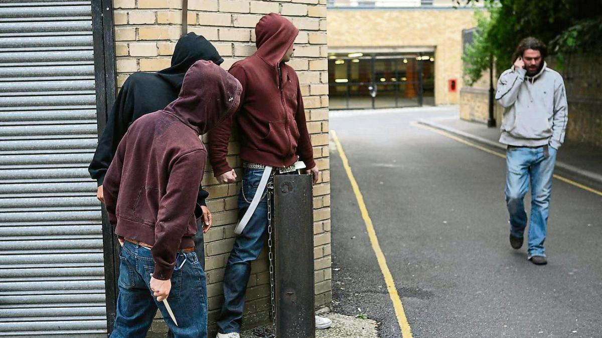
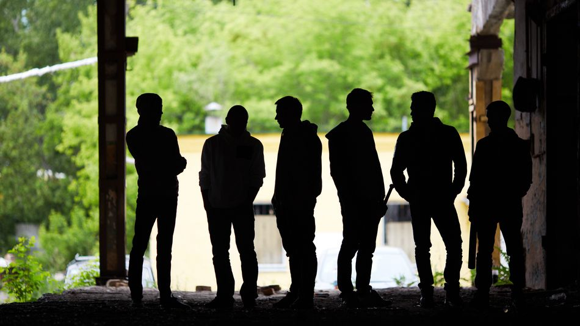

Causas de la Delincuencia en la Adolescencia
Las causas de la delincuencia en adolescentes pueden variar, incluyendo factores familiares, sociales y económicos. Los entornos problemáticos y la falta de oportunidades pueden empujar a los jóvenes hacia comportamientos delictivos.
Leer más sobre las causasConsecuencias de la Delincuencia Juvenil
Las consecuencias de la delincuencia juvenil pueden ser devastadoras tanto para el adolescente como para la sociedad. Incluyen sanciones legales, estigmatización social y dificultades para reintegrarse a la vida normal.
Leer más sobre las consecuenciasPrevención de la Delincuencia Juvenil

La prevención de la delincuencia juvenil implica medidas educativas, apoyo psicológico y programas sociales destinados a reducir los factores de riesgo y fortalecer los vínculos familiares y comunitarios.
Leer más sobre la prevenciónRol de la Familia y la Sociedad

El rol de la familia y la sociedad es fundamental para guiar a los adolescentes y evitar su incursión en la delincuencia. Un entorno de apoyo y educación sólida puede marcar la diferencia en su desarrollo.
Leer más sobre el rol de la familia y sociedad